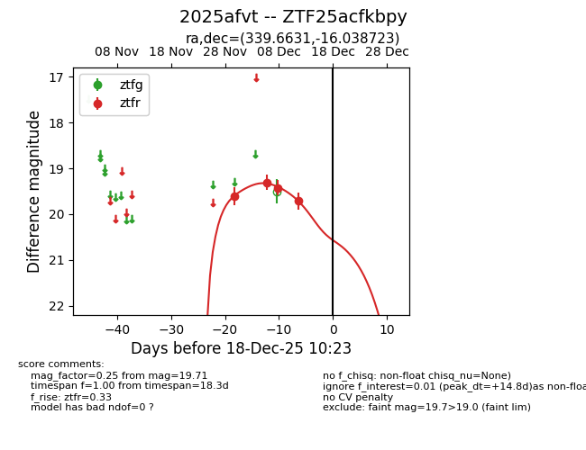
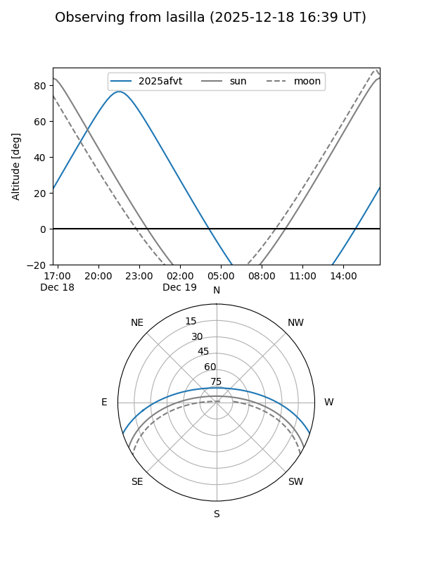
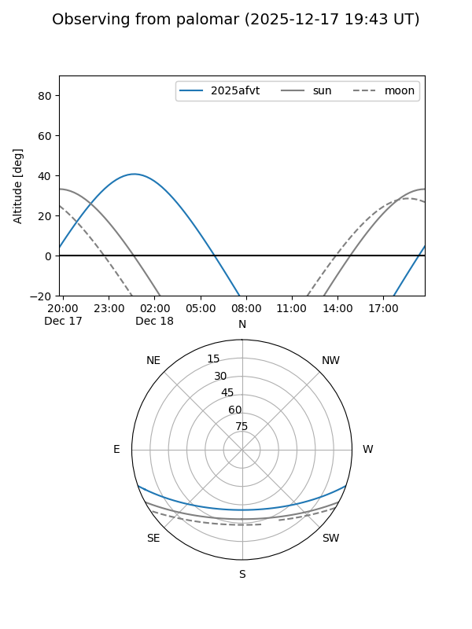

2025afvt
Target 2025afvt at 2025-12-18 11:17
Aliases and brokers:
FINK: fink-portal.org/ZTF25acfkbpy
Lasair: lasair-ztf.lsst.ac.uk/objects/ZTF25acfkbpy
ALeRCE: alerce.online/object/ZTF25acfkbpy
TNS: wis-tns.org/object/2025afvt
YSE: ziggy.ucolick.org/yse/transient_detail/2025afvt
alt names
ZTF25acfkbpy (ztf,fink_ztf)
2025afvt (tns,yse)
Coordinates:
equatorial (ra, dec) = 339.6631,-16.03872
equatorial (HMS+DMS) = 22:38:39.14,-16:02:19.40
galactic (l, b) = (45.8636,-57.32372)
Photometry
last ztfr=19.71
4 ztfr detections
Lightcurve

Visibility


Additional plots